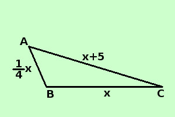

|
sviluppo Risolvere il seguente problema Calcolare le misure dei 3 lati di un triangolo sapendo che un lato e' 1/4 della base , l'altro lato supera la base di cm 5 e il perimetro supera la base di 30 cm. ipotesi: un lato e' 1/4 della base l'altro lato supera la base di cm 5 il perimetro supera la base di 30 cm. tesi: Calcolare le misure dei 3 lati  Base = BC = x
Lato AC = x + 5 so che vale la relazione: Perimetro = base + 30 , cioe' AB + BC + CA = BC + 30 sostituisco ai lati il loro valore ed ottengo
minimo comune multiplo
Applico il secondo principio per togliere i denominatori (moltiplico per 4) x + 4x + 4x + 20 = 4x + 120 sposto i termini con la x prima dell'uguale, quelli senza dopo l'uguale e chi salta l'uguale cambia di segno x + 4x + 4x - 4x = 120 - 20 sommo i termini simili 5x = 100 applico il secondo principio per trovare la x (divido per 5)
x = 20 Base = BC = x = 20 cm
Lato AC = x + 5 = 20 + 5 = 25 cm |